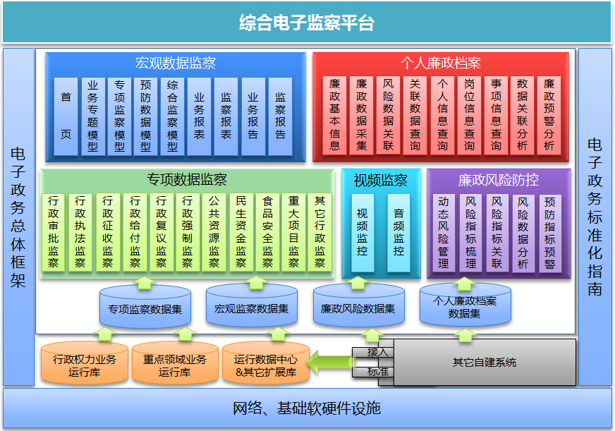

浪潮综合行政权力电子监察解决方案
方案概述
浪潮综合行政权力电子监察解决方案以创新行政电子监察为基础，政府精细化管理为手段，对各类反映效能的工作实现“事前、事中、事后”的全过程监察，实时推动工作进展，使其成为纪检监察机关工作管理的有力抓手，实现对大量工作数据的分析、工作绩效考核、效能评估，及时对违规、异常的工作执行情况予以纠错、改进，确保监察工作有序推进。
方案架构

浪潮综合行政权力电子监察解决方案由专项数据监察、视频监控、廉政风险防控、宏观数据监察、个人廉政档案等五个部分组成，形成“统一规划、统一设计、统一构建、灵活扩展”大格局，根据业务特性扩展监察子系统的模式。
专项数据监察：对行政权力、重点领域、民生领域等政务运行过程的监督监察，并以主题监察、预警纠错、绩效考核等辅助监察手段。
廉政风险防控：廉政风险指标动态管理、风险指标梳理、风险预警等，为纪检监察机关提供风险预防数据依据。
视频监控：将具有固定物理场所的行政权力办理地点的视频接入，达到对现场环境的实时监控。
宏观数据监察：全面为领导提供各种监察分析结果数据，通过模型创建，采集各级政府运行数据或监察数据进行汇总展现，供领导分析、研判、决策。
个人廉政档案：基于日常政务处理的综合数据，提供个人政务关联信息，为纪委监察机关提供分析、研判依据。
方案价值
构建各类电子监察系统的集成应用平台；行政权力、重点领域全面覆盖；管人管事深度关联；廉政风险科学评价；共享资源应用广泛；技术平台随需而变；核心模型智能领先。